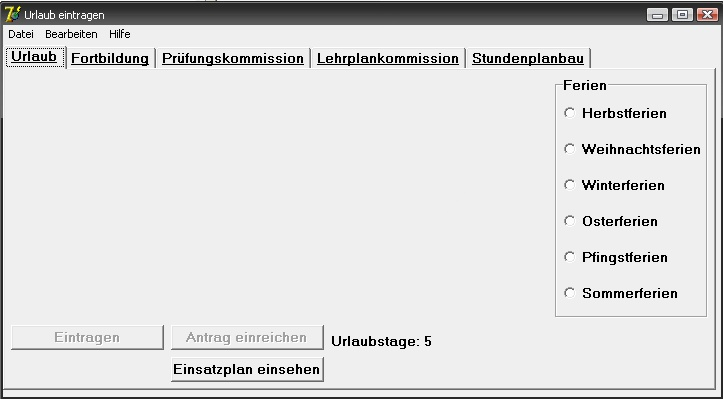

Nach dem Start des Programms und der erfolgreichen Anmeldung besteht die Möglichkeit Urlaubstermine zu beantragen. Zunächst lässt sich in der oberen Bildschirmhälfte auswählen ob man regulären Urlaub oder Sonderurlaub für Stundenplanbau, Weiterbildungen oder dir Mitarbeit in der Prüfungskommision. Anschliesend lässt sich am rechten Bildschirmrand auswählen in welchen Ferien man den Urlaub beantragen will. Dazu muss einfach nur das Auswahlfeld vor den betreffenden Ferien angeklickt werden.
Anschliesend werden die möglichen Urlaubstage in den Ferien angezeigt. Jetzt können die gewünschten Urlaubstage durch Anklicken der Felder vor den
jeweiligen Daten ausgewählt werden. Es werden hier nur Arbeitstage angezeigt, Feiertage und sonstige allgemein freie Tage werden vom Programm heraus gefiltert.
Hat man die gewünschten Urlaubstage in den Ferien eingetragen werden diese durch einen Klick auf "Eintragen" unten links übernommen und man kann mit dem Eintragen der
Urlaubswünsche in anderen Ferien fortfahren. Die Urlaubstage werden dann automatisch von den verbleibenden abgezogen, so dass Sie jederzeit wissen wie viele Tage Sie noch
beantragen können. Haben Sie alle Tage vergeben und sind mit ihren Planungen zufrieden können Sie den Antrag mit einem Klick auf "Antrag einreichen" absenden.
Das Urlaub beantragen ist damit abgeschlossen.